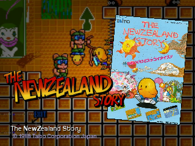
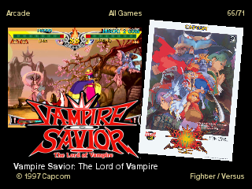
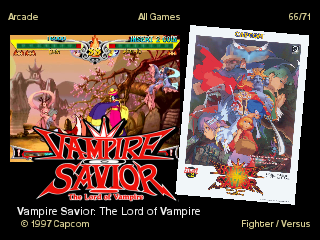
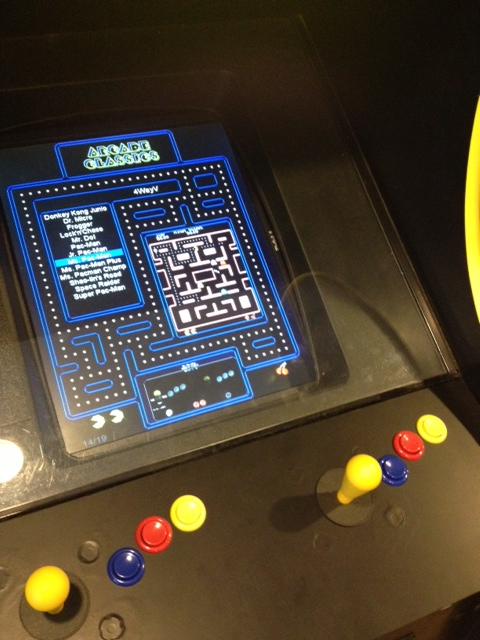

 
(screenshots showing the included "cools" and "attracman" layouts, as well as config mode)

(screenshots showing the included "cools" and "attracman" layouts, as well as config mode)
Features
- Configuration menu for easy configuration of most settings.
- Fully scriptable display layouts written in the Squirrel programming language.
- Includes the "Attrac-Man" layout, a playable Pacman-inspired game that unfolds around the edges of your game menu.
- Frontend controls can be mapped to any joystick, keyboard or mouse input.
- User configurable sounds and ambient music.
- Display images, videos and information related to specific games.
- Supports screen rotation and flipping (including auto-rotation).
- Filter and sort game lists based on multiple game attributes.
- Easily mark and cycle through your favourite games.
- Plug-ins for integration with external programs (such as LED control or joystick mapping software).
- Automatically generate game lists from directory contents.
- Import game information from MAME/MESS -listxml and -listsoftware commands.
- Import game lists from Hyperspin and Mamewah/Wahcade!.
- Scrape game list metadata from thegamesdb.net.
- Catver.ini, nplayers.ini and history.dat file support.
- Unicode character (UTF-8) support.
- GLSL shader (vertex and fragment) support.
- Configurable screensaver.
- Track game usage statistics (times played, total time played).
- Steam support.
Images
 (photo by cools from a Taito Egret 3 cabinet)
(photo by cools from a Taito Egret 3 cabinet)
 (photo by BrianAg95 with a custom layout)